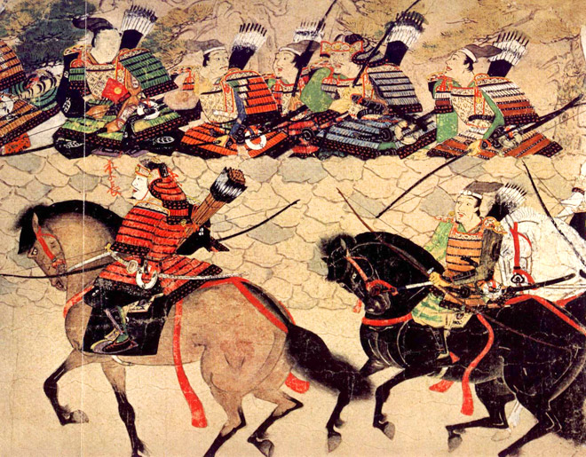

O Japão é um arquipélago – um grande conjunto de ilhas. Suas quatro maiores ilhas são Hokkaido, Honshu, Shikoko e Kyushu, mas o país é composto por milhares de outras pequenas ilhas.
Aproximadamente 85% do território japonês é coberto por montanhas, e o país tem um histórico de vulcões ativos. Seu clima é geralmente ameno e úmido; nas ilhas ao norte, os invernos são moderadamente frios e os verões frescos. Por causa da existência de tantas montanhas no país, apenas pequenas partes de terras japonesas são cultiváveis. As principais áreas de cultivo se localizam em pequenos vales de rios; a abundância de chuvas pelo país ajuda no cultivo de arroz, que é a principal safra japonesa.
A geografia japonesa exerceu uma importante influência na história do país: as montanhas dificultaram a unificação política da nação; o mar servia como fonte de alimento e transporte e também como uma proteção contra invasões de forças estrangeiras.
No segundo e terceiro séculos a.C., o povo japonês cultivava arroz em campos irrigados e trabalhava com bronze e ferro. Acredita-se que seus métodos de cultivo e sua tecnologia antiga são originários da China e Coreia.
Os antigos japoneses viviam em centenas de clãs – pequenas comunidades tribais – que frequentemente guerreavam entre si. Os governantes dos clãs eram também os líderes religiosos das comunidades tribais. A antiga crença japonesa era baseada no respeito às forças da natureza, que eram consideradas espíritas e chamadas de “kami”. De tal crença foi desenvolvida uma antiga religião japonesa chamada de xinto, que significa “o modo dos deuses”. Esta religião, desprovida de filosofia e de rituais complexos, era baseada na apreciação das maravilhas e belezas da natureza.
De acordo com as crenças xintoístas, o principal deus era Amaterasu – a deusa do sol. Os santuários construídos em homenagem a Amaterasu se localizavam onde pudessem captar os primeiros raios do nascer do sol. Acreditava-se que a deusa do sol era a protetora da nação japonesa. Até hoje, o Japão é conhecido como a Terra do Sol Nascente e sua bandeira, um círculo vermelho num fundo branco, representa esta imagem.
Kannon Bosatsu, mais conhecida no ocidente como Kuan Yin, como é chamada esta bodhisattva na China. Deidade da Compaixão e da Misericórdia, Kannon é uma das entidades mais cultuadas no oriente.
Antes de falarmos mais sobre essa bosatsu, convém ressaltar um fato curioso: Kannon possui representações tanto masculinas como femininas. Nas tradições budistas da Índia, do Tibet e do Sudeste da Ásia, Kannon é retratada como sendo uma deidade do sexo masculino. Já na China e no Japão, suas representações são femininas. Embora não haja uma explicação conhecida para esse fato, o nome sânscrito de Kannon/Kuan Yin é Avalokitesvara, uma palavra masculina.
No Budismo Shingon, Kannon aparece nesses dois aspectos. O mais tradicional, no entanto, é o masculino, chamado de Kanzeon Bosatsu. Nesta forma, Kanzeon é retratado com o corpo envolto em chamas, vestindo o tradicional robe de bosatsu na cor vermelha, segurando uma flor de lótus com a mão esquerda na frente de seu corpo.